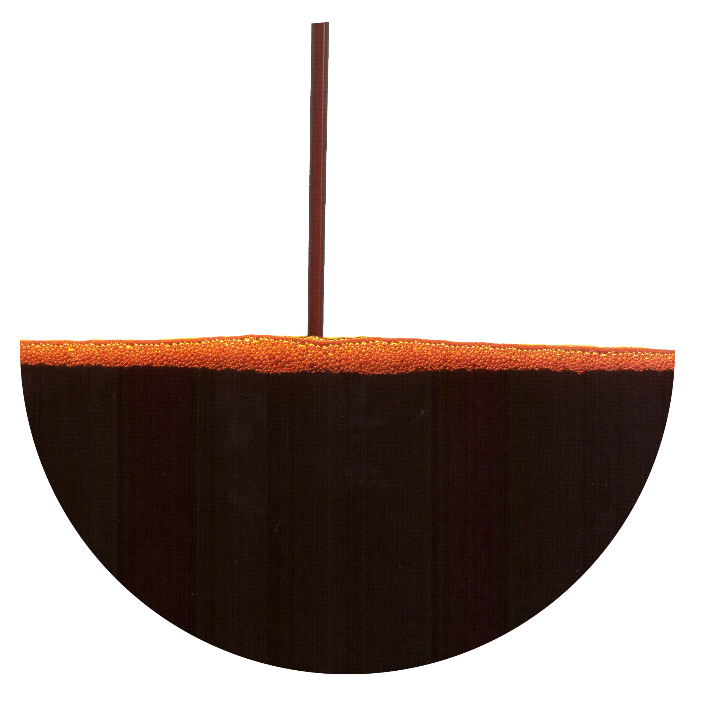

Lycopene

502-65-8
Synonyms or siblings
y,y-Carotene, All-trans lycopene, Tomato, Blakeslea
Funtion
Appeal - Color
Description
Lycopene, primarily found in tomatoes, is also in paprika, pink grapefruit, guava, watermelon, asparagus, and rose hips. Extracted from tomato pomace using solvents in large plants, it's used as a food colorant in the US and as a supplement. Best absorbed when tomatoes are cooked in olive oil, lycopene is a beneficial carotene, supporting photosynthesis and health.
다양한 이름
리코펜
기능
착색료
설명
라이코펜은 밝은 적색을 띠는 카로티노이드의 색소로, 토마토와 수박, 당근, 파파야 등 빨간 식물에 들어 있는 식물 화학물질(유기 화합물)이다. 베타카로틴처럼 체내에서 비타민 A로 전환되는 것은 아니지만, 베타카로틴 이상의 강력한 항산화 작용을 하며, 노화 방지, 항암 효과, 심혈관 질환 예방 및 혈당 저하 효과를 나타낸다.